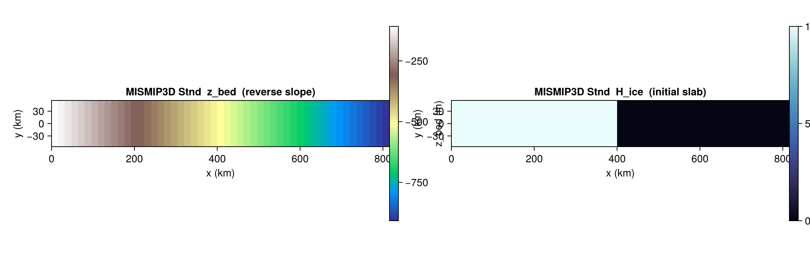

MISMIP3D
MISMIP3DBenchmark sets up the Marine Ice Sheet Model Intercomparison Project Phase 3D (Pattyn et al. 2013): a thin slab of ice on a reverse-sloping bed, used to study grounding-line migration and marine ice sheet (in)stability under three-dimensional flow.
There is no closed-form solution. The benchmark is host-driven and typically run for many thousand years to reach a steady grounding-line position before applying perturbations.
Constructor
MISMIP3DBenchmark(variant::Symbol = :Stnd;
dx_km::Real = 16.0,
xmax_km::Real = 800.0,
Ly_km::Real = 100.0,
H0::Real = 10.0,
z_bed_floor::Real = -500.0,
bed_intercept::Real = -100.0,
bed_slope::Real = 1.0,
smb_const::Real = 0.5,
T_srf_const::Real = 273.15,
Q_geo_const::Real = 42.0,
n_glen::Real = 3.0,
A_glen::Real = 3.1536e-18,
cf_ref::Real = 3.165176e4,
N_eff_const::Real = 1.0)The domain is [0, xmax_km] × [−Ly_km/2, +Ly_km/2]. The y-axis is implicitly periodic in the host's setup; an odd number of cells in y is chosen so the centerline coincides with a grid row.
Sub-tests
:Stnd — standard buildup
A 10 m slab of ice covers the portion of the domain where z_bed ≥ z_bed_floor; everywhere else H_ice = 0. The bed is a linear reverse slope z_bed(x) = bed_intercept − bed_slope · (x [km]), ranging from −100 m at x = 0 to deep below the floor near x = 800 km. Sea level is 0, so the slab is largely floating; perturbations migrate the grounding line. The eastern column carries mask_ice = 0 to provide a calving outflow boundary.
b = MISMIP3DBenchmark(:Stnd; dx_km = 16.0)
s = state(b, 0.0)
# s.H_ice (10 m slab), s.z_bed (reverse slope), s.smb_ref = 0.5 m/yr
Helpers
IceSheetBenchmarks.MISMIP3DBenchmark — Type
MISMIP3DBenchmark(variant::Symbol = :Stnd;
dx_km=16.0, xmax_km=800.0, Ly_km=100.0,
H0=10.0, z_bed_floor=-500.0,
bed_intercept=-100.0, bed_slope=1.0,
smb_const=0.5, T_srf_const=273.15,
Q_geo_const=42.0,
n_glen=3.0, A_glen=3.1536e-18,
cf_ref=3.165176e4, N_eff_const=1.0)MISMIP3D Stnd benchmark spec. Carries domain axes, bed geometry, IC slab thickness, surface forcing, and Glen-flow / friction parameters.
dx_km = 16.0 gives Nx = 51, Ny = 7 — odd Ny yields a centerline cell at j = 4 for stronger y-symmetry tests. dx_km = 20.0 (Fortran default) gives Nx = 41, Ny = 6 (even Ny, no centerline).
Only variant = :Stnd is supported.
References
- Pattyn, F. et al. (2013). Grounding-line migration in plan-view marine ice-sheet models: results of the ice2sea MISMIP3d intercomparison. J. Glaciol., 59(215), 410–422.